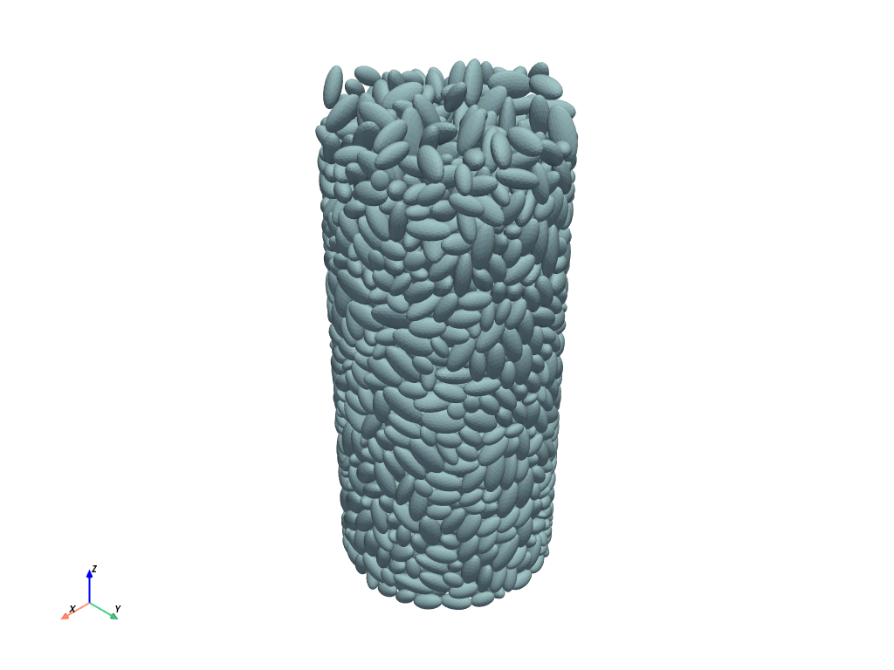
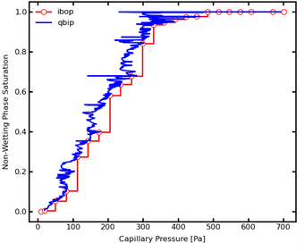
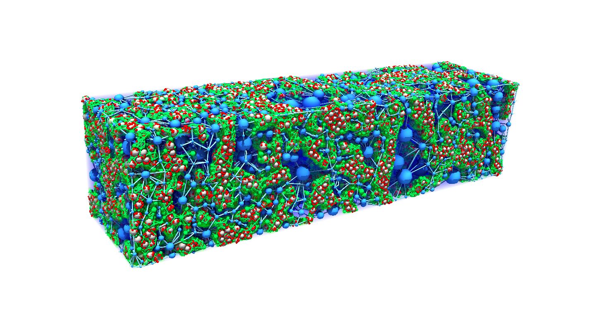
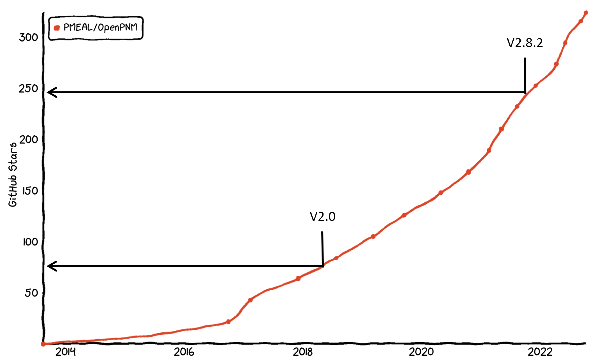
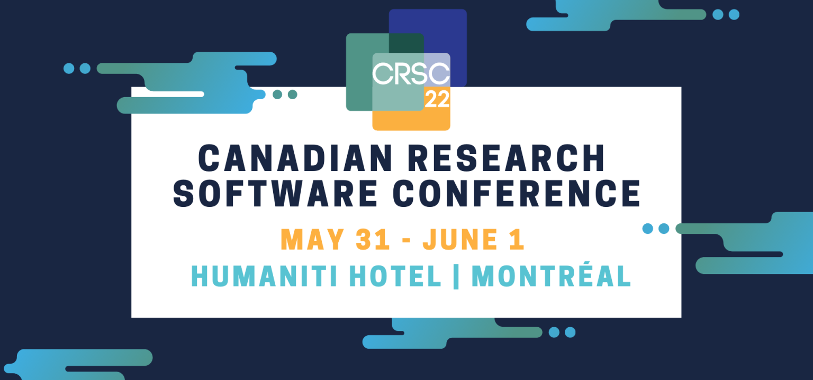
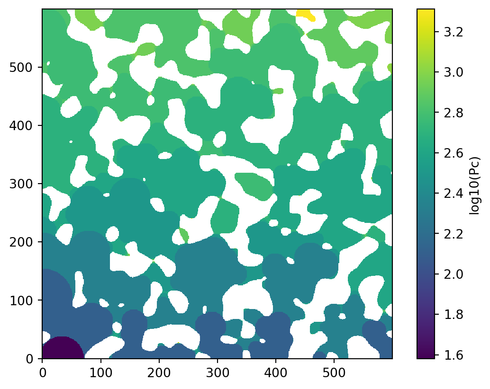
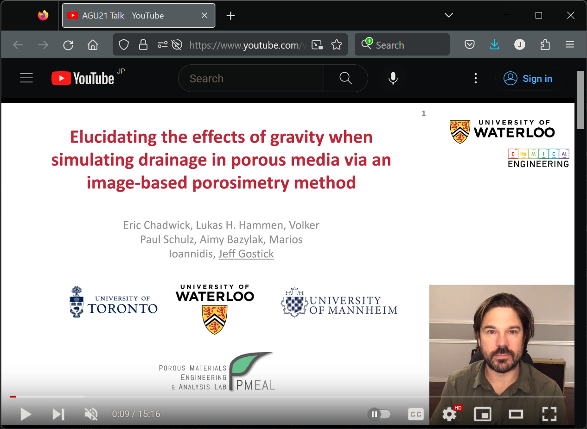

Home
Publications
Research
Blog
About
Blog
Categories
All
(11)
news
(11)
tips
(2)
Fun with Github actions and bumping version numbers
news
tips
Someone recently asked me if OpenPNM was still being maintained, and I was pretty shocked to see it had been months since we/I had dealt with any of the basic maintenance…
Nov 22, 2025
Jeff Gostick

Tips and Tricks: Converting STL files to voxel images
news
tips
STL files are a common way to represent 3D volumes. They are used by 3D printers and CFD models, among others. I was recently handed a batch of STL files by someone that had…
Jan 13, 2025
Jeff Gostick

Introducing QBIP: a new image-based fluid invasion algorithm including gravity and built for speed
news
Today we pushed our preprint to the Ar
\(\chi\)
iv, so we can show off our great new “Queue-Based Invasion Percolation” algorithm (QBIP) while we wait for the peer review…
Jun 5, 2024
Jeff Gostick

4-Phase Pore Network Model of a Fuel Cell Catalyst Layer
news
A few days ago our lastest paper went “live” in Applied Energy. I don’t normally post announcements about this sort of thing, but this case is noteworthy. Firstly, it’s a…
Oct 11, 2023
Jeff Gostick
Congratulations to Niloo for successfully defending her PhD!
news
Niloofar Misaghian joined the PMEAL group in the fall of 2018, and after 4 years of intense learning and research she successfully defended her thesis on December 9th. It…
Dec 24, 2022
Jeff Gostick

What’s New in OpenPNM V3
news
It’s been a long process, much longer than we would’ve liked, but OpenPNM Version 3.0 is finally here. Version 2.0 was released in August 2018, and version 2.8.2, the last…
Oct 10, 2022
Jeff Gostick

PMEAL Members Represent Strong at CRSC 2022
news
The 4th annual Canadian Research Software Conference was held earlier this week. Several members of the PMEAL group were present, and for the 4th straight year we won a top…
Jun 3, 2022
Jeff Gostick

Adding Gravity to Image Based Drainage Simulations
news
The PMEAL team recently developed a way to add gravitational effects to the standard drainage simulation algorithm based on sphere insertion, also sometimes called
morphologi…
Feb 9, 2022
Jeff Gostick

Prof Gostick presents new image-based invasion algorithm at AGU21
news
The annual fall meeting of the Americal Geophysical Union (aka AGU) is underway this week. The PMEAL group gave a talk about our new image-based invasion algorithm that…
Dec 14, 2021
Jeff Gostick
Prof Gostick Named Inaugural Azzam-Dullien Endowed Professor
news
The Department of Chemical Engineering recently received a generous donation from a former PhD student, Dr. Mohamed Azzam. Dr. Azzam undertook his PhD studies under…
Dec 7, 2021
Jeff Gostick
PMEAL Blog and Website now hosted on Github Pages
news
We used to host all our websites, openpnm.org, porespy.org and pmeal.com, on an Amazon cloud server using Wordpress. A few months we updated the PoreSpy website/landing page…
Jul 4, 2021
Jeff Gostick
No matching items